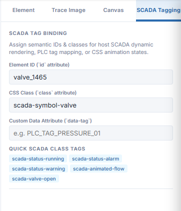
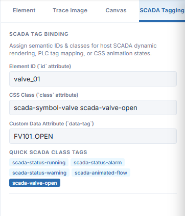
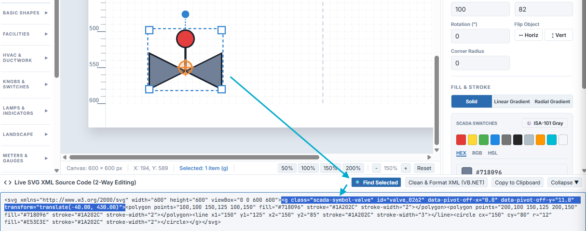

SimpleVG › Tutorial › Chapter 10
A drawing on its own is just a picture. To make it part of a live screen, some systems need to be able to say “this shape is valve FV101” and change how it looks when the valve opens. In SVG that is done with attributes on the shapes, and the SCADA Tagging tab is where you set them.
Drop a Valve Body onto the canvas, as in Chapter 4, then click the SCADA Tagging tab in the Inspector.

The tab has three fields and a row of quick tags:
id)valve_01.class)data-tag)FV101_OPEN.Type valve_01 into Element ID and FV101_OPEN into Custom Data Attribute. Then click the scada-valve-open chip under QUICK SCADA CLASS TAGS to add that class. The chips add a class without typing, and the other ones are scada-status-running, scada-status-alarm, scada-status-warning and scada-animated-flow.

Notice that the class field now reads scada-symbol-valve scada-valve-open. The symbol already carried its own class, and the chip added to it.
Open the live code drawer from Chapter 5 and click Find Selected. The valve’s group is highlighted, and the three attributes are right there.

That is the whole mechanism. The SVG you save carries these names, so any system that reads them can look up valve_01 or FV101_OPEN and drive the shape from live data. SimpleVG keeps the tags when you save, and when you open the file again later.
id, class and data-tag attributes.In the final chapter we look at the live SVG code drawer in more depth: reading the code, editing it, and using it to find and tidy up shapes.